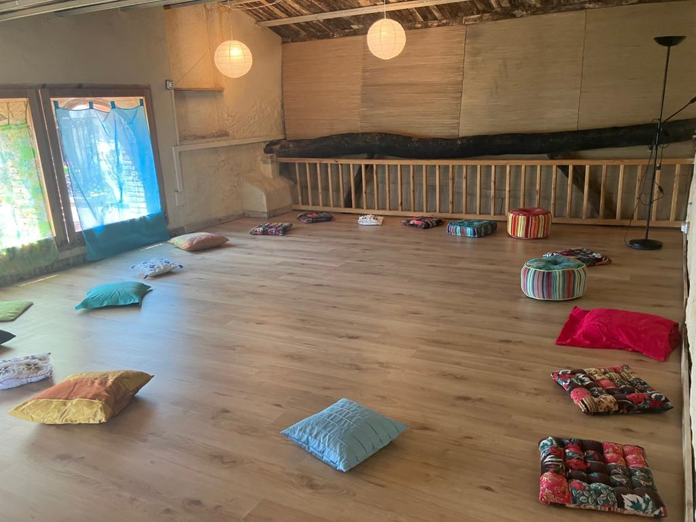

Bienvenue sur ma page personnelle !
Je m'appelle Brisa. J'enseigne les langues (catalan, français et anglais), la danse et le travail corporel.
Je crois que l'on communique autant avec les mots qu'avec le corps.
Je poursuis un Master en technologies de la traduction et de la communication à l'Université de Genève, une formation qui me passionne pour apprendre des ressources de gestion de contenus multilingue.
En parallèle, je donne vie à mon projet professionnel né en 2012 à Genpeve où la danse et la musique se rencontrent :Ritme de Vida

L'Altell est mon espace de travail corporel en Catalogne.